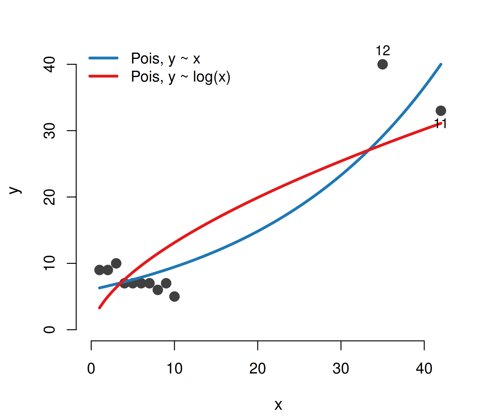
Dormann (2020), Environmental Data Analysis — Chapters 9 and 10
2026-09-17
Fitting a GLM (Chapters 7 and 8) is only half the work. Chapters 9 and 10 ask: is the model adequate for the data? At the end of this chapter you should…
summary() is not a diagnosis — you have to lookplot(lm(...)) producesNote
Dormann lists five diagnostic steps. The first — the distribution of the predictors — is exploratory and we treat it only in passing; the remaining four each get their own section here, and their own exercise in practical 4b.
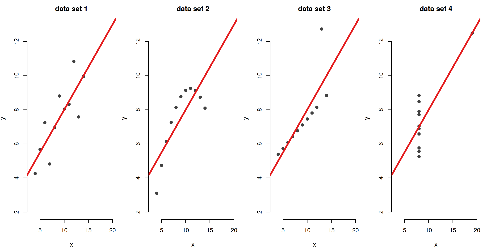
Anscombe’s quartet (Dormann Fig. 9.1). All four regressions have the same line, \(y = 3.0 + 0.5x\), the same \(R^2 = 0.67\), the same \(t = 4.24\), \(P = 0.002\). Only the first is an acceptable regression: the second is curved, the third has one point that pulls the line, and in the fourth a single point makes the whole relationship. No number in summary() can tell these apart — only the picture can. Diagnostics are done after fitting, because we do not test \(y \sim N(\mu, \sigma)\) but \(y \sim N(\mu = a + bx, \sigma)\).
These are not independent: a wrong curve shows up as overdispersion and as a residual pattern, and an influential point can create or hide a curvature. Diagnostics are iterative.

Dormann’s “simple regression?” (Fig. 9.2 / Sect. 10.1): 12 points, a Poisson GLM. Ten points show a negative trend, two points far to the right make it positive. Because x is so skewed (step 0: the predictors), Dormann log-transforms it and continues with fm2 <- glm(y ~ log(x), family = poisson). So will we.
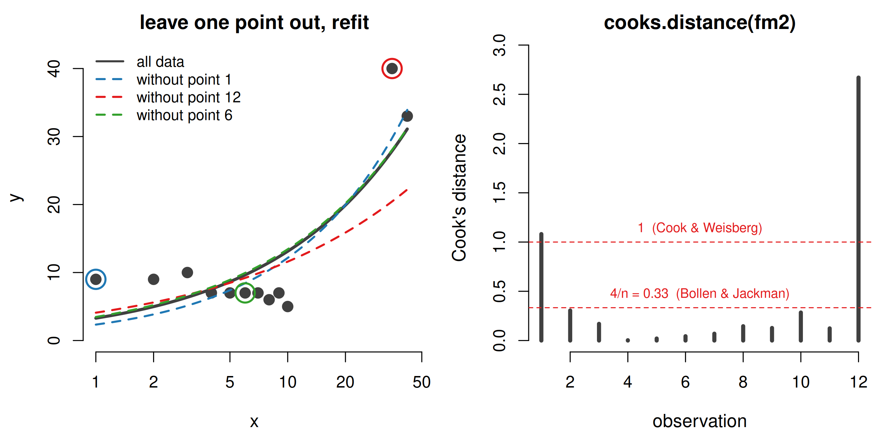
Cook’s distance answers: how much do all fitted values change when I drop this one observation? Leaving out point 6 changes nothing; leaving out point 1 or 12 visibly tilts the curve. Dormann’s thresholds: \(D_i > 1\) or \(D_i > 4/n\). Both flag points 1 and 12 here (with raw x it was 11 and 12 — step 0 influences step 1!). Unlike “3 standard deviations” rules, Cook’s distance finds two influential points at once.
| slope for log(x) | std. error | P | |
|---|---|---|---|
| all 12 points | 0.601 | 0.080 | 0 |
| without points 1 and 12 | 0.584 | 0.108 | 0 |
There is no justification for eliminating a point because it is an “outlier”. A typo or a broken instrument, yes — but not “to make the result work”. What we may do is refit without the influential points in addition to the full analysis, and test for robustness.
Tip
Dormann’s two model sentences (Sect. 10.1.2):
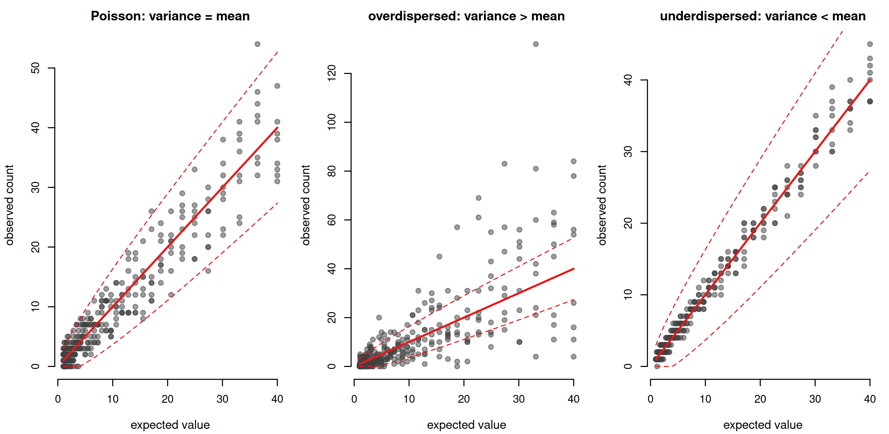
Poisson and binomial fix the variance as a function of the mean — there is no free spread parameter, so the dispersion is 1 by assumption (dashed: mean ± 2·√mean). If the real data scatter more (middle) they are overdispersed — very common: clumping, missing predictors, wrong curve. If they scatter less (right) they are underdispersed — rarer: e.g. clutch sizes that are physiologically regulated. Normal and gamma have no such problem: their dispersion is a fitted parameter. Bernoulli (0/1) data cannot be overdispersed.
\[\hat\phi \approx \frac{\text{residual deviance}}{\text{residual degrees of freedom}} \qquad \text{should be} \approx 1\]
| residual deviance | df | ratio | |
|---|---|---|---|
| exa: Pois, y ~ log(x) | 30.9 | 10 | 3.09 |
| Galapagos: Pois, Species ~ log(Area) | 651.7 | 28 | 23.27 |
| bioassay: Binom, survival ~ S | 10.8 | 13 | 0.83 |
Dormann’s rule of thumb: much larger than 2 → overdispersed; much smaller than 0.6 → underdispersed. Both numbers are printed by summary(); the Pearson version sum(residuals(m, type = "pearson")^2) / df.residual(m) is what the quasi-models actually use.
Important
Overdispersion makes standard errors too small — effects look more significant than they are (McCullagh & Nelder 1989). Underdispersion makes them too large. Either way the estimates themselves are fine; it is the uncertainty that is wrong.
| slope log(x) | std. error | P | phi | AIC | |
|---|---|---|---|---|---|
| Poisson | 0.601 | 0.080 | 0.00000 | 1.00 | 84.2 |
| quasi-Poisson | 0.601 | 0.145 | 0.00200 | 3.29 | NA |
| negative binomial | 0.463 | 0.142 | 0.00108 | NA | 78.5 |
Both make the relationship less significant — but it remains clearly positive.
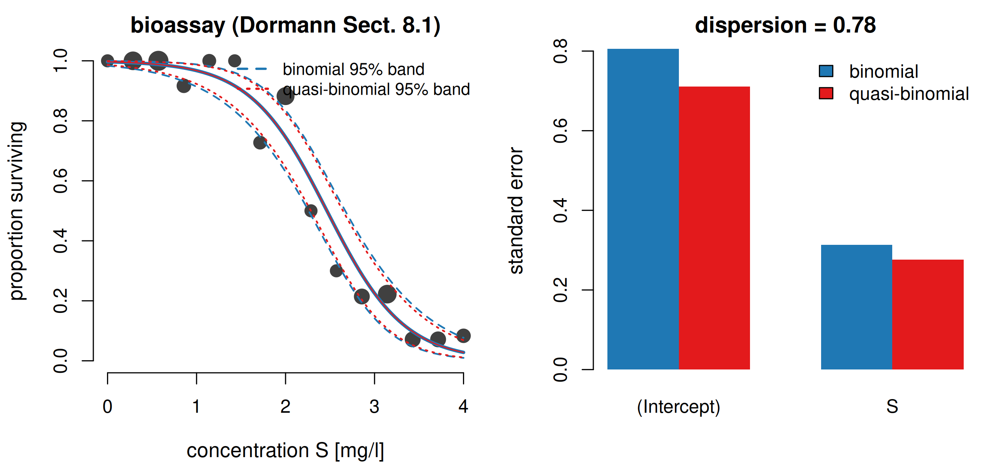
Survival of Daphnia against a toxin (a binomial GLM, presentation 3). Dispersion ratio 0.78 — slightly underdispersed. family = quasibinomial estimates \(\hat\phi\) = 0.78 and scales the standard errors by \(\sqrt{0.78}\) = 0.88: the same fitted curve, but a narrower band and a smaller p-value. With the more usual overdispersion it works the other way: the band widens. Never trust a binomial or Poisson standard error before you have checked \(\hat\phi\).
For a Gaussian model the residual is just \(y - \hat y\). For Poisson or binomial data that is useless: large \(\hat y\) have large residuals by design. So we divide by what the model expects (Pearson), or use the contribution to the deviance (deviance residual), and then correct for dispersion and leverage:
standardised deviance residuals:
rstandard(fm)— patternless cloud around 0, spread about ±2, roughly 5% outside ±2.
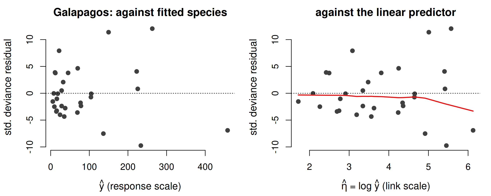
Same residuals, two x-axes. On the response scale the points pile up at the left and the plot is uninformative; on the link scale — predict(fm, type = "link") — the points spread out evenly (Dormann Fig. 9.3). Always plot against the linear predictor, and against each predictor — including candidate predictors that are not (yet) in the model.
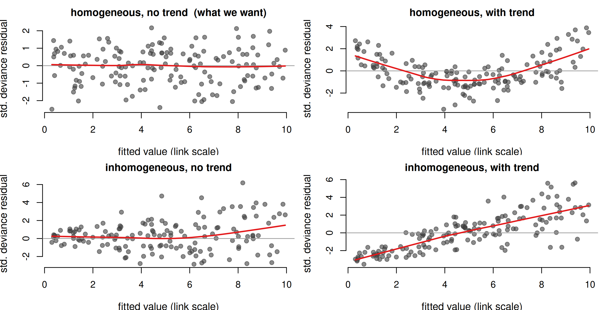
Dormann Fig. 9.4. Two questions, always: is there a trend? and is the spread the same everywhere? A trend (right column) means the mean is misspecified — wrong functional form, or a missing predictor (→ step 4). A fan (bottom row) means the variance is misspecified — wrong distribution or dispersion (→ step 2). Crawley: the ideal plot looks like “stars in a clear night sky”. For 0/1 (Bernoulli) data these plots are not helpful; there one simulates from the model instead (DHARMa).
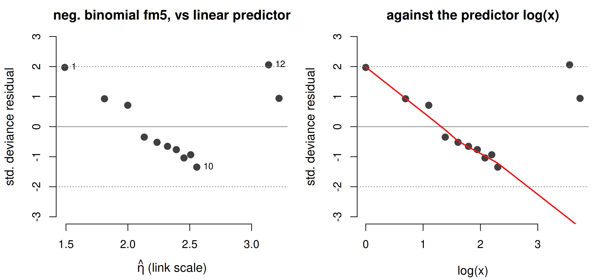
The first ten residuals march down in a straight line — from +2.5 at x = 1 to −1.7 at x = 10 — and then the two large x jump back up. Such a pattern in residuals that should be random makes us suspicious of the whole model: log(x) alone does not capture the opposing trends of the small and the large x values. Note that this is the negative binomial fit — the dispersion “fix” of step 2 did nothing for the shape. We need a different functional relationship (step 4).
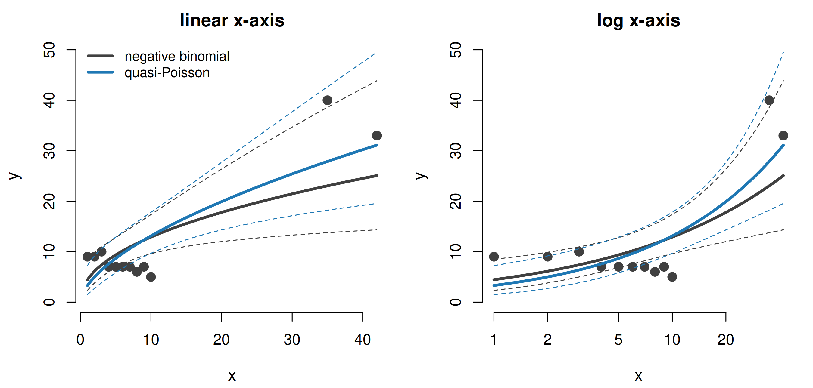
Dormann Fig. 10.4. curve() can draw \(e^{a + b\log x}\) but not its confidence band; for that: a fine sequence of x, predict(fm, newdata, se.fit = TRUE) on the link scale, fit ± 2 SE, then back-transform (exp() for a log link, plogis() for a logit) and matlines(). Poisson and quasi-Poisson give the same curve — only the band differs. Beyond x ≈ 20 the bands are so wide that the two models are “very similar”, even though the negative binomial curve lies consistently lower.
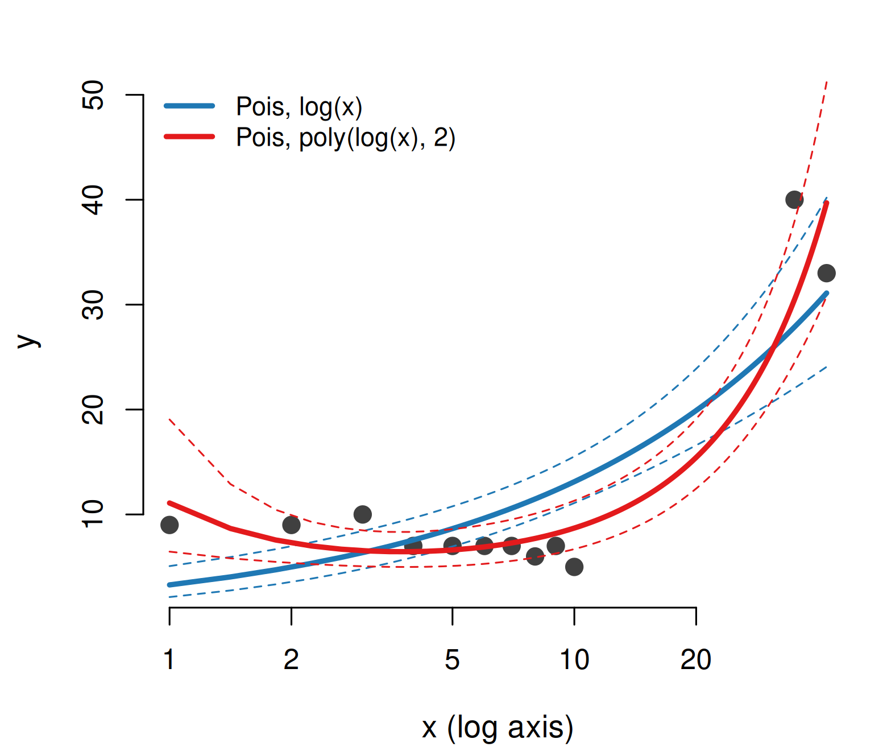
| model | resid. dev | df | P | AIC |
|---|---|---|---|---|
| log(x) | 30.9 | 10 | NA | 84.2 |
| poly(log(x), 2) | 8.8 | 9 | 2.59e-06 | 64.1 |
fm22 <- glm(y ~ poly(log(x), 2), family = poisson) anova(fm2, fm22, test = "Chisq")
Any smooth curve can be approximated by a polynomial, and “simply non-linear” data rarely need more than \(x + x^2\). The quadratic term explains 22 more units of deviance (P < 10⁻⁵), the AIC drops by 20 — and the dispersion ratio falls from 3.09 to 0.98: the overdispersion was the wrong curve. Refit the negative binomial with the quadratic and \(\theta\) jumps from 6.6 to 197 — it becomes a Poisson.
Nested models (one is the other with a term set to 0): likelihood-ratio test. Non-nested (Poisson vs negative binomial): AIC. Quasi-models: neither — only the pictures. Use poly() for the test (orthogonal, correct SEs); the explicit x + I(x^2) gives the same curve and readable coefficients but distorted standard errors (Dormann’s footnote 9). Refit and repeat all checks: the residuals of fm22 are within ±2 without a pattern, and the observed values sit on the 1:1 line against the fitted ones (Dormann Fig. 10.6).
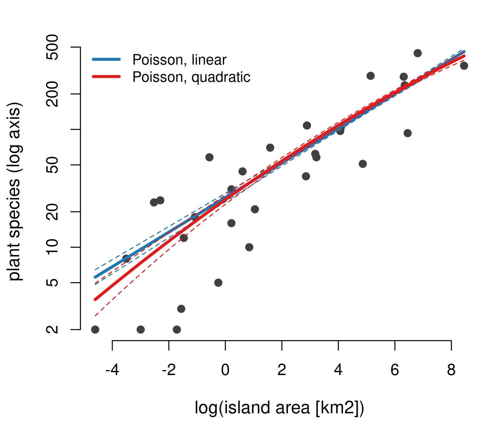
Galapagos (Dormann Sect. 9.1.5): the quadratic term is “significant” (LR test P = 0.001, AIC −8) — but the curves differ only for the smallest islands, and \(\hat\phi\) = 23 says the Poisson standard errors are far too optimistic.
| family | LR test: quadratic term |
|---|---|
| Poisson | 0.001 |
| neg. binomial | 0.840 |
Account for the overdispersion with a negative binomial and the evidence for the curvature vanishes. Extrapolating to a 1000 m² rock, the two Poisson models predict λ = 2.6 vs 1.2 species — with overlapping intervals.
Dormann: “What we really need here is a sense of proportion.” Use the quadratic if your hypothesis demands it; otherwise a linear interpretation is defensible when the curves are practically indistinguishable — and be very careful when the models only disagree outside the range of the data.
plot(lm(...)) gives four plots for free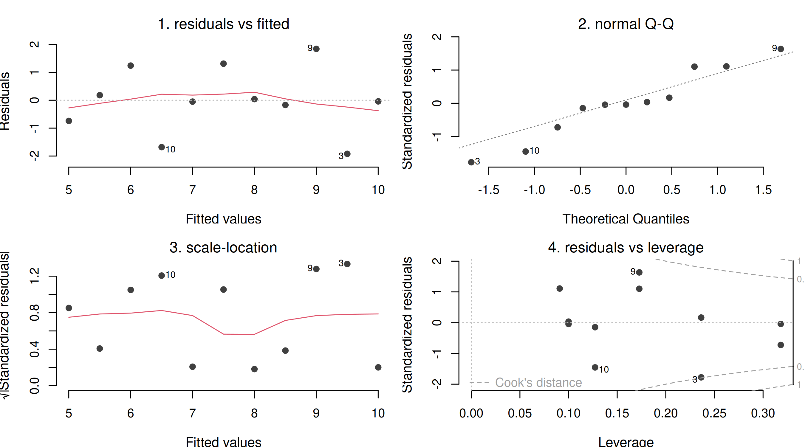
Anscombe’s good data set 1. For a normal LM the link is the identity, so response and link scale coincide and residual analysis is “especially important” (Dormann): mean and variance are independent, so the spread must be the same for all fitted values (homoscedasticity). R’s four standard plots check, in turn: the mean (1), the distribution (2), the variance (3) and the influence (4). The three most extreme points are labelled with their row numbers in every panel.
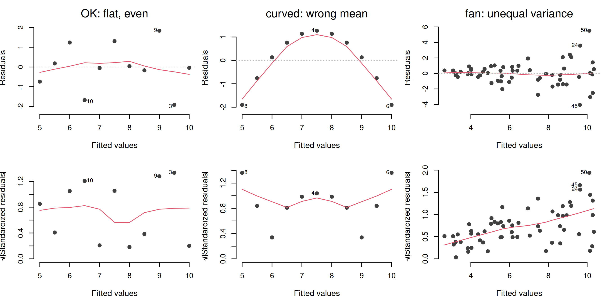
Plot 1 — raw residuals \(y - \hat y\) against \(\hat y\) with a red lowess line. Ideal: a flat line at 0 and a uniform band of points. A bend = the functional form is wrong (Anscombe 2, middle); a fan = the variance grows with the mean (right). Plot 3 — \(\sqrt{|\text{standardised residual}|}\) against \(\hat y\). Taking the absolute value folds the cloud upwards and the square root tames the skew, so this plot isolates the variance question: a rising red line means heteroscedasticity → think log-transform of y, or a gamma/Poisson GLM whose variance is allowed to grow with the mean.
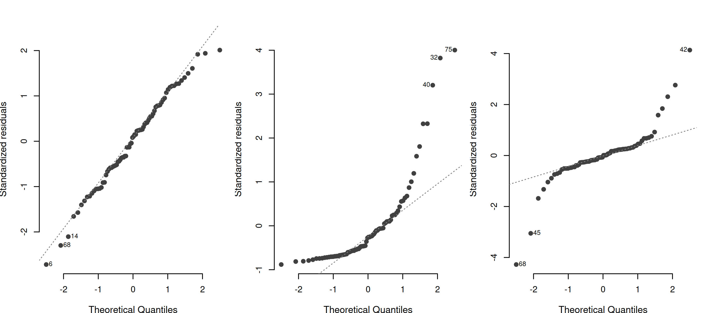
The standardised residuals are sorted and plotted against the quantiles one would expect from a standard normal distribution of the same size (Q = quantile: empirical on the y-axis, theoretical on the x-axis). Normal residuals lie on the 1:1 line. A curve (middle) means skew: the largest residuals are larger than a normal distribution allows — typical for a strictly positive response, and a hint towards a log-transform or a gamma distribution. An S-shape (right) means heavy tails: more extreme residuals at both ends than expected. Small wiggles at the extremes are normal; only check normality of the residuals, never of the raw y.
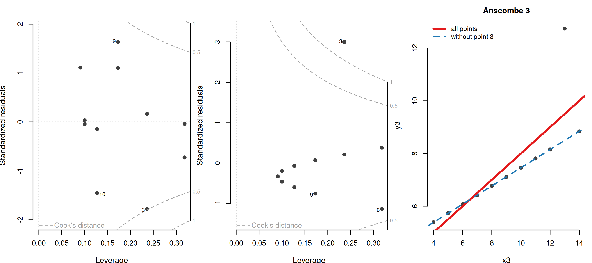
Leverage (the hat value, x-axis) says how unusual an observation’s predictor value is — far from \(\bar x\) means a long lever. The standardised residual (y-axis) says how far it is from the line. Cook’s distance is the product of the two, and the dashed red contours at 0.5 and 1 show where it gets dangerous: the top-right and bottom-right corners. Anscombe 3’s point 3 has a moderate leverage but a huge residual → D = 1.4. (Anscombe 4 cannot be drawn: its single outlying x has leverage 1 and Cook’s distance is undefined.) plot(fm, which = 4) shows the same information as a bar per observation.
summary() cannot diagnose a model — Anscombe’s quartet has identical numbers and only one acceptable fit. Plot the data, plot the fit, plot the residuals.plot(fm) does most of the work: mean (1), distribution (2), variance (3), influence (4). For a GLM build plots 1, 3 and 4 yourself with rstandard(), predict(type = "link") and cooks.distance(); the Q-Q plot is for the Gaussian case only.Note
Practical 4b runs exactly these four steps on wells, clutch, RIKZdat and gala: cooks.distance(), family = quasipoisson / quasibinomial, glm.nb(), rstandard(), predict(..., se.fit = TRUE) + matlines(), poly(), anova(..., test = "Chisq"), AIC().
Tip
Dormann, C. F. (2020). Environmental Data Analysis: An Introduction with Examples in R, Chapters 9 and 10. Springer. Further reading on the lm plots: Faraway (2005) Linear Models with R; Fox & Weisberg (2019) An R Companion to Applied Regression.